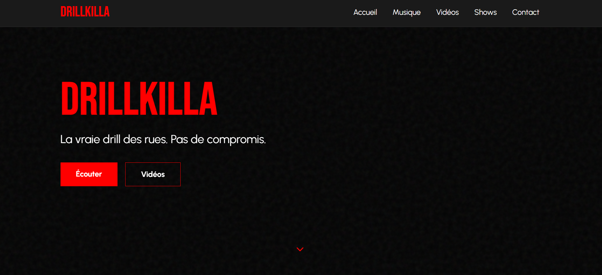

Sites vitrines

Le Petit Café –
Détente & Gastronomie
Lumina Bijoux –
Joaillerie Personnalisée

DrillKilla –
DrillKilla –
Artiste Drill
Éclat Beauté –
Salon de Beauté
Éclat Naturel –
Spa & Bien-être
Manger Bien Manger Mieux –
Nutritionniste
Créez le vôtre
Votre projet mérite d'être en ligne.